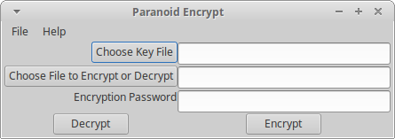

Usage
|  |
| Linux version of the GUI. On MacOS menus appear in the normal place rather than in the window. |
If you installed the MacOS application you can launch it as normal by double-clicking on the application icon. All others continue reading.
If the installation was done properly the GUI can be launched by navigating to the directory containing this software and issuing the command: python3 wxParaCrypt.py . If python3 is your system default you can just use "python" instead of "python3". The script "wxParaCrypt.py" also specifies what interpreter to use. Thus, if you set the executable bit in your OS, you should be able to launch the program directly. From the command line in *nix use something like: ./wxParaCrypt.py .
It is also possible to create a launcher. This will depend upon which window manager you are using. In the lightweight Linux GUIs look for something like "MenuEditor" or a "Run Program..." option.
It is important to choose a key file that introduces unpredictable randomness. Avoid file types that have any of the following:
- Repetative information (patterns).
- Large swaths of constant values (uncompressed cartoons or other simple graphics: .tiff, .gif, uncompressed .png).
- Very simple files such as plain text files.
Ideal files are files with unpredictable randomness that only you and your correspondent have. Some examples are:
- Photos with complex backgrounds (preferrably natural) that have not been posted to the internet/cloud.
- Document files with a mix of text and images (preferably photos) that use a compressed storage format (e.g. .odt, .docx, .zip, .gzip). Compressed files avoid long runs of constant values.
Because of the way the password is used to randomize the key file, even key files that are not very random should provide reasonable encryption. Still it is best to use key files with as much unpredictability as possible. This software makes no effort to estimate the randomness of your key file. There are some utility functions that can be used to judge this in the codebase, but they are slow and designed to be used in interactive python.
Use the same rules you use for choosing a good account password. It should be at least 8 characters long (12 or more is better). It should contain a mixture of upper and lowercase letters, some numbers and symbols. Avoid just slightly modified words or phrases that can easily be guessed by someone who does a little research on you or your correspondent.
- Select the key file you want to use either by clicking on the button or by typing the full path to the key file in the textbox provided.
- Select the file to encrypt by clicking on the button or by typing the full path in the textbox provided. WARNING: files (especially plain text) should be compressed before encryption so that high frequency letters (bytes) do not overwhelm the alorithm's ability to generate enough random addresses with a reasonalbe length section of your key file.
- Type the password in the textbox provided. The password is not obscured; thus you should not use this software in a location where somebody could read or photograph this over your shoulder. A future version may provide the option to obscure or show the password.
- Click on the "Encrypt" button and choose a location and name for the encrypted file.
- A popup window with status messages will appear. Read the messages to make sure the encryption worked properly. You then may close this window.
- Select the key file you want to use either by clicking on the button or by typing the full path to the key file in the textbox provided.
- Select the file to decrypt by clicking on the button or by typing the full path in the textbox provided.
- Type the password in the textbox provided. The password is not obscured; thus you should not use this software in a location where somebody could read or photograph this over your shoulder. A future version may provide the option to obscure or show the password.
- Click on the "Decrypt" button and choose a location to save the decrypted file. NOTE: The name for the file is stored in the encrypted data. If a file of the same name already exists in the location you choose, it will be overwritten!
- A popup window with status messages will appear. Read the messages to make sure the decryption worked properly. You then may close this window.
Scenarios
Although I believe this code is secure, it has not undergone any professional security testing. Thus even the "High Security Usage" recommendations may not be secure. In general this should be used as another layer of encryption wrapped inside standard security such as https or PGP encrypted e-mail. I encourage all users to read the code and let me know of issues using the issue tracker on the public archive website.
Choose key files that meet the criteria in the section on choosing key files. Use strong passwords that vary in time. Preshare these with your correspondent as well. You should also agree on something to include in the encrypted file that will act as a signature so your correspondent can be sure it came from you. Store the key files on a removable device and do not attach this storage device to a network connected computer. Do all encryption on a computer or device that is not connected to the networks. Transfer only the encrypted file to the network connected computer to send to your correspondent. Decryption should be handled the same way. Do not resuse key file + password combinations.Transfer encrypted files using encrypted network protocols.
The restrictions for high security usage could be loosened a little. Rather then deciding ahead of time on which key file to use, the name of the key file for the next encrypted document could be transferred using PGP e-mail and a small key file that is reused with the time varying password.
Rather than using lots of private key files, share a small number of small key files and time varying passwords. Use these and PGP e-mail to agree on publicly available files as the key files. If your web traffic or your correspondent's web traffic is being monitored, decrypting your messages is reduced to guessing your password and combining that with the monitored downloaded files to decrypt your files.
Caveats (Warnings)
- This code should not be used for archival (long-term) encryption because the encryption depends on the version of the random number generator used by Python. This may change.
- This code has not undergone a professional security review. Use at your own risk.
- Version 1.0 has limited error checking. It may crash if you attempt to decrypt a file with the wrong keyfile or password.
- If you choose weak passwords or key files that are not adequately random the encryption will not be very good. Any file with large swaths of repeated data will be very bad, because the encryption pattern will be determined only by the predictable psuedo-random number generator. Files with patterns (especially repeating) have similar problems.
- Reusing password + key file combinations will reduce the security of your encryption, because cryptanalysts may be able to figure out some repeats. That said, if your key files are larger than the files being encrypted you will be somewhat protected by the fact that random chunks of the randomized temporary key file are used each time encryption is done. Which chunk will depend on the cryptographic seed provided by your computer.